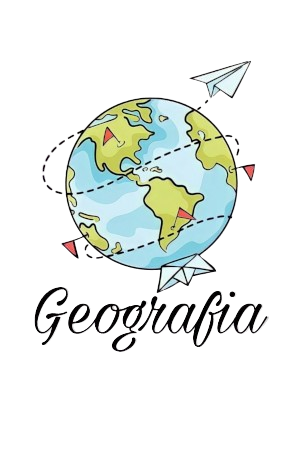

Geografia
A Geografia estuda o espaço geográfico, ou seja, todo o espaço terrestre produzido pelo homem ou que possui direta ou indireta relação com este. Sendo assim, o estudo das sociedades urbana e rural, o uso e apropriação dos recursos naturais e as dinâmicas naturais fazem parte dos estudos geográficos.
- Geografia do Brasil: O território brasileiro é o quinto maior do mundo. Cada região apresenta uma imensa variedade climática e de biodiversidade. Além disso, possui as maiores bacias hidrográficas do globo terrestre. Banhado pelo oceano Atlântico, o país encontra-se dividido em cinco regiões: Norte, Nordeste, Centro- Oeste, Sudeste e Sul, Apresenta seis ocorrências climáticas, com predomínio da tropical, e relevo formado por planaltos, planícies e depressões. A vegetação brasileira é composta por cinco biomas: Amazônia, Cerrado, Caatinga, Pantanal e Mata Atlântica.
- Litoral brasileiro: O Litoral consiste numa faixa de terra junto à costa marítima, sendo banhada por mares e oceanos. O território brasileiro possui mais de 7,3 mil quilômetros de litoral, que se estende do Amapá ao estado do Rio Grande do Sul.
A paisagem do litoral brasileiro é bem diversificada, composta por dunas, ilhas, recifes, costões rochosos, baías, estuários, brejos e falésias. A região é povoada por uma enorme variedade de animais, entre eles destacam-se: golfinhos, baleias, 800 tipos de peixes, aves, além de uma grande variedade de vegetais.